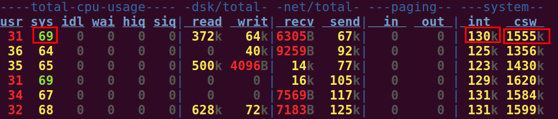
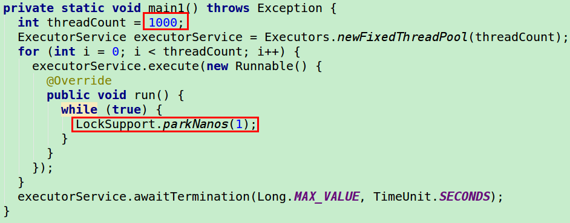
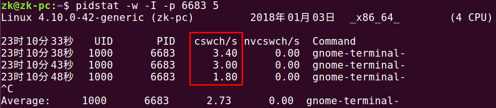

Linux常见性能分析工具
首先需要执行安装命令 sysstat :
|
|
vmstat - Virtual Memory Statistics - 监控内存和 CPU
每 1 秒更新一次输出信息:
|
|
可以看到用红色框住的部分，有着很高的 cs (上下文切换) 值和 us(用户 CPU 时间) 值，表明系统上下文切换频繁，用户 CPU 占用率高:

一般这样的代码容易产生上下文切换比较频繁的情况:
|
|
每 1 秒采样一次，共计 3 次:
|
|

查看是否有大量磁盘交换，对于没有磁盘交换的服务器，这些值应该为 0:

iostat - 监控 I/O 使用 - 判断 I/O 是否过载
|
|
只输出磁盘使用情况:
|
|
pidstat - 监视进程和线程
什么叫做占用 CPU 的线程:
|
|
什么叫做空闲线程:
|
|
使用 jps 找到 Java 程序的 PID 1187，然后执行下面命令查看 CPU 使用情况:
|
|
- -p: 指定进程 ID
- -u: 对 CPU 使用率的监控
监控线程信息:
|
|
- -t: 监控线程信息，输出的时候会多一个 TID 参数

使用 jstack 可以导出指定 Java 应用程序的所有线程:
|
|

如图所示，它的 nid (native ID) 为 0x4b4，转为 10 进制后，正好是 1024
有大量读写的线程:
|
|
使用如下命令监控磁盘 I/O 情况:
|
|
- -d: 监控磁盘 I/O
进行内存监控
|
|
free - Display amount of free and used 内存 in the system
|
|
- -t:
- –total: Display a line showing the column totals.
- -h: human readable

sar - 收集, 报告以及保存系统活动信息
首次使用，需要编辑文件:
|
|
将里面的内容改为:
|
|
然后重新启动 systat:
|
|
才能直接使用 sar
uptime - Tell how long the system has been running

mpstat - Report processors related statistics
netstat
|
|
- -a:
- –all: 显示所有的监听和未监听的 Sockets
- -n:
- –numeric: 显示数字的地址，而不是显示 symbolic 地址，端口或用户名
top - 显示系统整体资源使用情况
|
|
lsof - list open files
|
|
- -p $PID: excludes or selects the listing of files for the processes whose optional process IDentification (PID) numbers are in the comma-separated set s.
strace - trace system calls and signals
|
|
dstat
dstat 是一个可以取代 vmstat，iostat，netstat 和 ifstat 这些命令的多功能产品。dstat 克服了这些命令的局限并增加了一些另外的功能，增加了监控项，也变得更灵活了。dstat 可以很方便监控系统运行状况并用于基准测试和排除故障。
|
|
dstat 是使用 Python 写的，源码参考

线程如果被频繁休眠/唤醒，会造成 kernal cpu 利用率高， context switch 达到 cpu 极高水平，进而导致其他线程获取 cpu 时间少，吞吐量下降。
就是下面这段代码导致的:

操作系统性能监控
CPU 使用率:
- 图形界面:
gnome-system-monitor
CPU 调度程序运行队列 (等待好运行、正等待可用 CPU 的轻量级进程):
vmstat的第一列r列
内存使用率:
vmstat的free列top/proc/meminfo
监控锁竞争:

- 让步式上下文切换: 执行线程主动释放 CPU
- 抢占式上下文切换: 线程因为分配的时间片用尽而被迫放弃 CPU 或者被更高优先级所抢占。
通过命令 pidstat -w 的 nvcswch/s 这一列能够监控到抢占式上下文切换的数量。